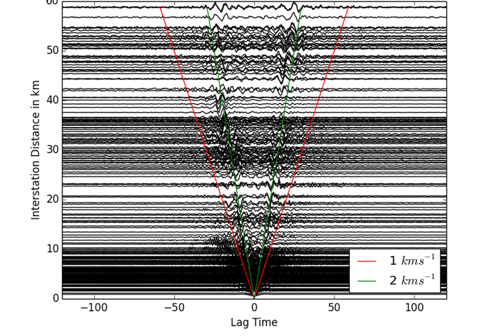

- LASIF large scale full waveform inversion
- MSNoise monitoring seismic velocity changes w/ seismic noise
- HASHpy python wrapper for HASH focal mechanism code
- SeedLink plotter realtime wave monitor
- scisola automatic real-time moment tensor calculation
- Instaseis instant global high frequency seismograms
- hypoDDpy automated event relocations using HypoDD
- SeisHub a seismological XML/SQL database server
- ...
- complete end-to-end framework for large scale adjoint full seismic waveform inversion

- complete end-to-end framework for large scale adjoint full seismic waveform inversion

- monitoring of seismic velocity changes by cross-correlation of continuous waveforms
- handles: signal processing, database storage of cross-correlations, calculation of derived velocity variations and visualization

- wraps HASH fortran code (Hardebeck/Shearer) for convenient use
- focal mechanism calculations based on QuakeML event information

- command line tool to display realtime waveform data acquired via seedlink
- either single "drum" plot or multi station plot


- moment tensor calculations using ISOLA and events served in real-time from SeisComP3 instance

- instantaneous calculation and visualization of broadband seismograms from Green's function databases generated with AxiSEM

- automated relocation of large amounts of earthquakes including automated cross correlation pick alignment using HypoDD
- hybrid XML/SQL/file-system database for seismological waveform/station/event data and server suited for personal/work group or small to intermediate size data center usage